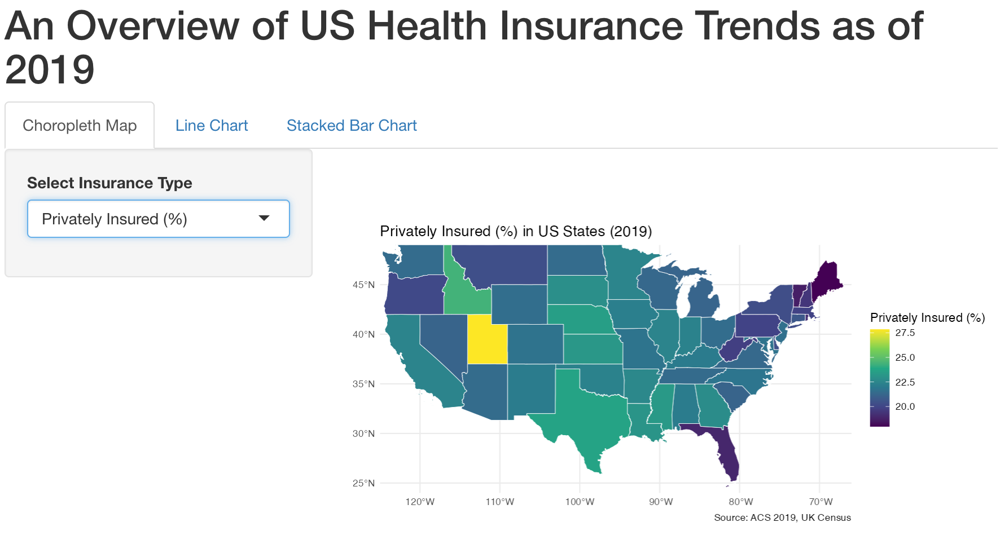
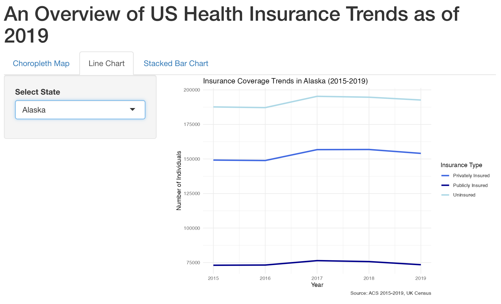
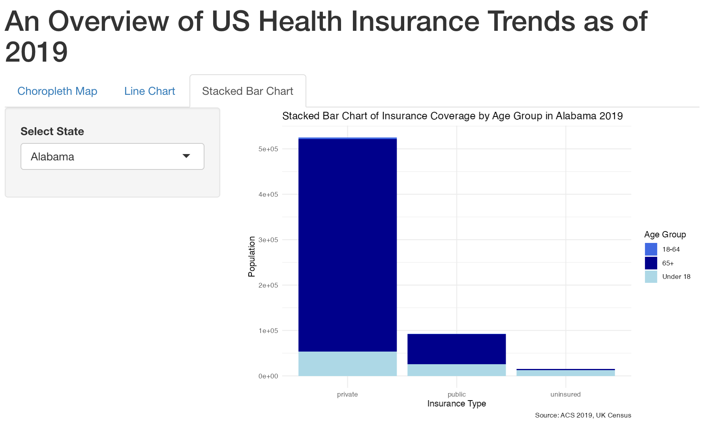

Getting data from the 2015-2019 5-year ACSDownloading feature geometry from the Census website. To cache shapefiles for use in future sessions, set `options(tigris_use_cache = TRUE)`.In recent years, expanding universal health insurance coverage has been the primary health policy in healthcare reform around the world, including in developed and developing countries, such as the USA, Mexico, and China (Wang et al., 2012). These efforts aim to address disparities in access to healthcare, reduce out-of-pocket expenses, and improve population health outcomes. Nonetheless, many spatial dependencies and demographic inequalities in the health insurance realm still persist.
This report aims to examine health insurance trends in the United States, particularly analysing 2019 US Census data. By scraping and visualising health insurance data from the American Community Survey (ACS), this report aims to investigate spatial trends in US health insurance using publicly available data. This data set provided valuable and extensive data on the health insurance system in the US, such as health insurance types by age and state – making this valuable information for data-driven work in the social sciences and policy-making.
In this report, the primary dataset utilized for analyzing US healthcare insurance coverage trends was sourced from the American Community Survey (ACS) 2019, under the US Census Bureau. The ACS provides granular, state-level data on various social and economic indicators, including healthcare insurance coverage.
Scraping the Data
For this project, the data was accessed using an API wrapped, via the tidycensus package in R, which allows users to interact with the Census Bureau’s API and automate the collection of large-scale real-world data. The ACS provides estimates of health insurance coverage for both individuals and households, including those who are uninsured, privately insured, and publicly insured.
To access the census data, an API key must be requested from the user from the US Government’s Census Portal. After saving this API key, it must be set as an environment variable, as seen below, to be able to access the data.
The use of an API allows for large datasets to be gathered and updated efficiently, providing a comprehensive overview for studying trends such as health insurance.
Following this, to scrape data from the ACS, the get_acs function was used to obtain data by variable, for a given geography and obtain relevant Shapefiles, as this project employs a mapping visual as well. The Shapefiles were accessed through the census using a geometry = TRUE argument, in the API call. This should send an API call for the following:
Getting data from the 2015-2019 5-year ACSDownloading feature geometry from the Census website. To cache shapefiles for use in future sessions, set `options(tigris_use_cache = TRUE)`.Filtering Data
Filtering the dataset included selecting the relevant variables and ensuring data entries were all named properly, ensure dataset clarity. This also included the creation of variables such as % variables.
For instance, these data tidying steps are seen below for the data needed for the first visualisation,
state_insurance <- state_insurance %>%
rename(
state = NAME,
total_population = B27010_001E,
uninsured = B27010_002E,
privately_insured = B27010_003E,
publicly_insured = B27010_004E
) %>%
mutate(
uninsured_rate = uninsured / total_population * 100,
private_insurance_rate = privately_insured / total_population * 100,
public_insurance_rate = publicly_insured / total_population * 100
)Another key aspect of the data wrangling process was working with age data and health insurance type data. As seen below, the pivot_longer function was used to facilitate the separation and creation of a new variable.
#| warning: false
age_insurance <- age_insurance %>%
pivot_longer(
cols = starts_with("private_") | starts_with("public_") | starts_with("uninsured_"),
names_to = c("insurance_type", "age_group"),
names_sep = "_",
values_to = "population"
)Warning: Expected 2 pieces. Additional pieces discarded in 9 rows [1, 2, 3, 4, 5, 6, 7,
8, 9].Similarly, the data for all three visualisations which are to be present on the interactive dashboard, were tidied and wrangled from the raw US Census format. The table below shows a list of the variables extracted.
| Variable | Variable Description |
|---|---|
| Uninsured | Number of uninsured individuals in each state. |
| Privately Insured | Number of privately insured individuals in each state. |
| Publicly Insured | Number of publicly insured individuals in each state. |
| State | US State |
| Uninsured Rate | % of uninsured individuals in each state. |
| Privately Insured Rate | % of privately insured individuals in each state. |
| Publicly Insured Rate | % of publicly insured individuals in each state. |
| Age Group | Age group: under 18, 18-64 and 65+. |
| Year | Year in which data was collected. |
Table 1: Dataset Variables Description Table
Data visualization is a powerful tool for communicating complex insights and trends. In this project, an interactive dashboard was built using an R Shiny App to allow users to gain insight into health insurance trends across different US states. The dashboard features three key visualizations: a choropleth map, a line chart, and a stacked bar chart.
Choropleth Map: Insurance Type % Across the US
The first visualisation in the dashboard is a choropleth map, placed under the first tab of the RShiny Web App. As seen in Image 1.1, the map uses a colour gradient to represent the percentage of the population in each state with a certain insurance type in the US as of 2019.

Image 1.1 Choropleth Map Visualisation: Insurance across the US
The visualisation works by inputting a specific insurance type, such as Privately Insured, Publicly Insured, or Uninsured, and provides a spatial overview of the discrepancies across the country. For instance, considering the example of uninsured individuals, it can be noted that Utah and Texas have very high rates, of over 25% of individuals being uninsured. These regional differences provide valuable insight from a policy perspective, particularly when considering planning the implementation of targeted intervention. The use of colour, with yellow representing a higher proportion and dark blue representing a lower proportion, allows for clear visualisation of any emerging trends and patterns.
More notably, when considering privately insured individuals, the proportion is much higher in the eastern region of the country. This highlights possible key inequalities associated with healthcare, and is an interesting trend to analyse from an analytical and policy point of view.
Line Chart over Time: Insurance-Type Trends over Time in the US
The line chart visualization offers an interactive way to explore health insurance coverage trends across the United States from 2015 to 2019. Users can select a specific state to observe detailed year-by-year changes in the number of individuals who are uninsured, privately insured, or publicly insured. By illustrating these shifts, the chart provides valuable insights into how coverage patterns evolve over time, reflecting the impacts of policy changes, economic factors, and demographic shifts.

Image 1.2 Line Chart: Insurance Coverage Trends in US States
In most states, a notable trend emerges: the uninsured population tends to represent the largest group, followed by those with private insurance and, finally, public insurance. However, these patterns may vary, especially in states that have expanded Medicaid or introduced other health policy initiatives. Over time, the data highlights fluctuations in insurance coverage categories, offering valuable insights for policymakers, researchers, and stakeholders seeking to improve healthcare accessibility and equity.
This visualization underscores the disparities in health insurance coverage across the country and provides a critical tool for understanding how states adapt to evolving healthcare needs and challenges.
Stacked Bar Chart: Insurance Coverage by Age Group
The third visualization in the RShiny App dashboard illustrates insurance coverage by age group across different US states in 2019. This stacked bar chart provides a detailed breakdown of how individuals in three key age brackets—under 18, economically active adults aged 18 to 64, and those aged 65 and older—are distributed across uninsured, privately insured, and publicly insured categories. By presenting the data in this structured format, the chart enables users to explore disparities in insurance coverage by age group and region, offering a valuable tool for identifying areas in need of targeted interventions.

Image 1.3 Stacked Bar Chart showing Insurance Type by Age Group
As seen in Image 1.3, the data reveals that younger individuals, particularly those under 18, make up a significant proportion of the uninsured population. Conversely, public insurance programs, such as Medicare, cover the majority of individuals aged 65 and older, while the economically active age group (18–64) demonstrates more varied coverage across all three categories.
These insights highlight the need for policies that specifically address age-related disparities in insurance coverage. For instance, increasing outreach and enrollment efforts for children and their families or expanding public insurance programs for economically active adults could help reduce the number of uninsured individuals. By focusing on these trends, data-driven strategies to improve equitable access to health insurance across all demographics can be developed.
A key opportunity where I had the chance to employ Generative AI tools was during the visualization processes when developing my Choropleth visualisation in my RShiny App. While creating a function to plot the spatial distribution of health insurance packages across the US, I was able to employ ChatGPT, alongside my other module content, to learn how to work with visualising Shapefile data.
server_gpt_assisted <- function(input, output) {
# Render plot1 for Choropleth Map (Tab 1 - Visualisation Number 1)
output$plot1 <- renderPlot({
selected_column <- switch(input$insurancetype,
"Uninsured Rate (%)" = "uninsured_rate",
"Privately Insured (%)" = "private_insurance_rate",
"Publicly Insured (%)" = "public_insurance_rate")
ggplot(state_insurance) +
geom_sf(aes(fill = get(selected_column)), color = "white") + # using spatial data from US Census
scale_fill_viridis_c(name = input$insurancetype) + # Using Pre-Made R Colour Palettes
coord_sf(
xlim = c(-125, -66), # Longitude limits for the continental US
ylim = c(24, 49), # Latitude limits for the continental US
expand = FALSE # Ensure Map is zoomed in on the US
) +
theme_minimal() +
labs(
title = paste(input$insurancetype, "in US States (2019)"),
caption = "Source: ACS 2019, UK Census"
)
})
}As seen in the code chunk above, generative AI tools helped me to understand how to read shapefile data in a ShinyAPP and also scaling my data to only cover the US region. Having previously worked with shapefile data, but through a csv. format, this was a learning experience for me and I was able to build upon my existing knowledge.
Additionally, while writing this project on Quarto, I found GenAI tools helpful in proofreading text and identifying any small errors. As Quarto does not have any built-in editor, for example like that in Microsoft Word, GenAI was a useful proof-reading tool.
However, there are instances where ChatGPT was unable to provide insightful contributions. For instance, when exploring methods to visualise time data, ChatGPT provides suggestions where a much larger dataset is needed. However, the ACS is conducted every 5 years, making this recent and relevant data relatively sparse. This is something that GenAI tools cannot help us with as they do not know the context of the data the user is working with. Nonetheless, I found GenAI tools a helpful collaborative tool in refining this data analysis project.
This report highlights the utility of combining advanced data analysis techniques with innovative visualization methods to explore health insurance trends in the United States. By leveraging the 2019 American Community Survey (ACS) data and integrating tools like R Shiny, the project provides critical insights into spatial and demographic disparities in healthcare coverage.
The interactive dashboard serves as a valuable tool for policymakers and researchers, showcasing variations in insurance coverage by state, age group, and insurance type. Each visualization—whether the choropleth map, line chart, or stacked bar chart—offers a unique perspective on the challenges and progress within the U.S. healthcare system. These visual tools emphasize the disparities in coverage, guiding data-driven interventions to promote equitable access to healthcare. It underscores the potential of data visualization and AI-assisted tools in bridging knowledge gaps, fostering informed decision-making, and driving meaningful healthcare reforms. Such interactive platforms can provide a foundation for future research and initiatives aimed at reducing health insurance disparities across the United States.